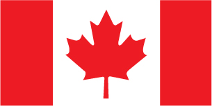
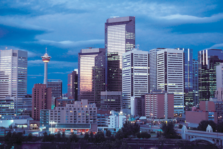
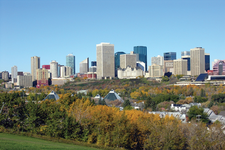

Module 4—Properties of Solutions
Lesson 4—Concentration I
Who Determines What Is Allowed in Safe Drinking Water?
There are many government agencies working very hard to manage the water supply. As a Canadian citizen, you should familiarize yourself with each of these agencies and know their roles in protecting your drinking water.
Federal Level
These organizations are concerned with broad-based concerns regarding water quality in Canada.

© Andrew Chin/shutterstock
- Environment Canada: Environment Canada's mandate is to preserve and enhance the quality of the natural environment; conserve Canada's renewable resources; conserve and protect Canada's water resources; forecast weather and environmental change; enforce rules relating to boundary waters; and coordinate environmental policies and programs for the federal government.
© Environment Canada. Used with permission.
- Health Canada: Health Canada develops and enforces regulations under Government of Canada legislation. The Department consults with the Canadian public, industry and other interested parties in the development of laws that protect health and safety. Health Canada also prepares guidelines and policies in order to help interpret and clarify the legislation surrounding drugs and health products.
© Health Canada. Used with permission.
A document titled “Water Quality in the Environment and Workplace” describes Health Canada’s role in drinking water safety.
Provincial Level
Governing drinking water in Canada falls under provincial/territorial jurisdiction. The province is responsible for developing and enforcing legislation that monitors all water activity within the province.
-
Alberta Environment: Alberta Environment is responsible for water policy and legislation to ensure the quality and quantity of our water resources and to ensure thriving ecosystems now and in the future.
-

© Falk Keinas/shutterstock
Municipal Governments and Water Treatment Facilities: The City of Calgary carefully monitors all issues related to drinking water. You may wish to read the pamphlet "2006 Water Quality Report" to learn more about the city’s work in this area.
-

© Wendy Nero/shutterstock
Regional Health Authorities: In Edmonton, Capital Health is the regional health authority. You may wish to read about the role of Capital Health and water suppliers in providing safe water in the article "Tapping into Water Safety."